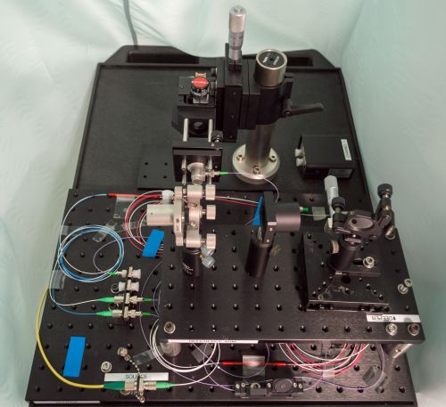
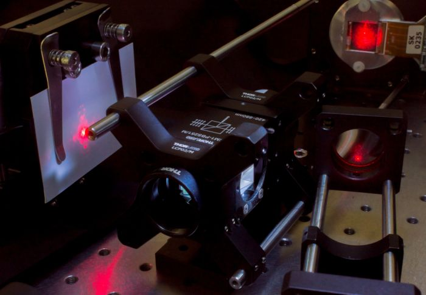
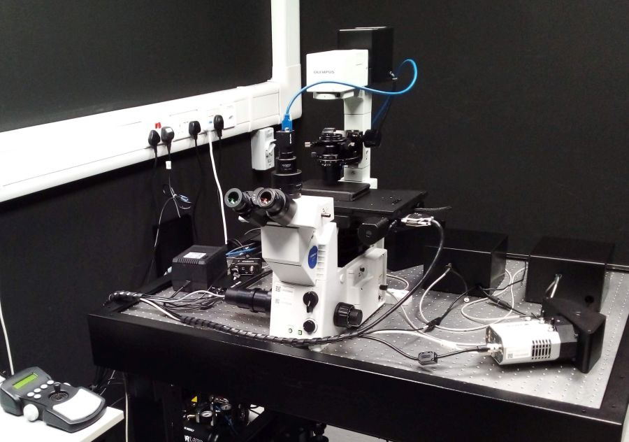
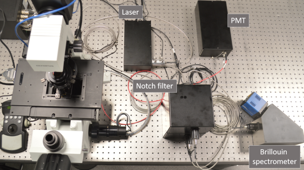
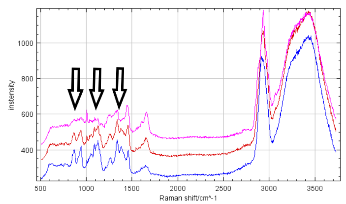

Research and Development in Optical Microscopy
2-photon Microscope for imaging and optogenetics in live animals

We develop advanced optical imaging techniques for in vivo
imaging of biological tissues. Currently, one of our primary projects is
constructing and validating custom 2-photon microscopes capable of
performing simultaneous 2-photon imaging and 2-photon optogenetics of
neurons in small animals. The microscopes are highly optimized and
customizable to meet the demands of neuroscience research at NTU LKC
Medicine. Upcoming plan includes incorporating adaptive optics to
further enhance the capability of the 2-photon microscopes to preserve
spatial resolution when imaging through highly-scattering biological
tissues.
 Team: Josiah CHONG, Peter
TÖRÖK, Aalim KHAN, Louwrens
van DELLEN,
,
Sayyed Omar Kamal
Team: Josiah CHONG, Peter
TÖRÖK, Aalim KHAN, Louwrens
van DELLEN,
,
Sayyed Omar Kamal
Collaborators: Róbert
SZIPÖCS (Wigner Research Centre for Physics, Budapest)
Two kinds of pulsed lasers were being adopted for the developed 2-photon microscope, i.e. 920/1060 nm fixed-wavelength fiber laser and sub-picosecond tunable laser with operation wavelength range spanning 795 – 1100 nm. The dual 920/1060 nm fixed-wavelength fiber laser allow simultaneous 2-photon imaging and 2-photon optogenetics of neurons in small animals aforementioned. On the other hand, the sub-picosecond laser pulse is necessary for distortion-less delivery of the light source into the microscope through a photonics crystal fiber (PCF), and is crucial for future miniaturized head-mounted two-photon microscope for freely-moving mice.
Custom electronics and opto-mechanical design were also involved to allow interchange of multiple type of low-light photodetectors, i.e. PMT and MPPC for comparison of their performance in different excitation/emission signal level. Custom pre-amplifier also significantly reduces the need of expensive of-the-shelf commercial pre-amplifier and ensure the required detection bandwidth when resonant scanner is employed.
Upcoming plan includes incorporating adaptive optics to further enhance the capability of the 2-photon microscopes to preserve spatial resolution when imaging through highly scattering biological tissues.
Deep Brain Optical Coherence Tomography

We are developing optical coherence tomography at novel
wavelengths, i.e. 1700 nm wavelength for deep mouse brain imaging. The
infrared photons at 1700 nm wavelength experience much less scattering
in mouse brain tissues, which will allow us to improve the achievable
spatial resolutions and penetration depth.
This work is supported by A*STAR AME YIRG grant A1884c0018.
Team: Josiah CHONG, Peter
TÖRÖK, Aalim KHAN
Conventional high resolution spectral / Fourier (SD / FD) Optical Coherence Tomography (OCT) typically performed at 800 nm achieves shallow penetration depths, mainly due to attenuation by absorption and scattering, thus are limited for superficial assessment of thick turbid media such as pharmaceutical tablets and biological tissues. Since the number of photons propagating unhindered (i.e., not scattered or absorbed) scales exponentially with the attenuation length (inverse of total attenuation coefficient of the tissue), the number of ballistic photons at the focal volume may drop to < 0.7% even after propagation of only 5 attenuation lengths (about 0.6 mm at 800 nm wavelength for biological tissue such as mouse brain). At the same time, the collection of multiply scattered light increases due to the high probability of forward scattering in biological tissue. Multiple scattering distorts the beam wavefront and prevents tight focusing when imaging deep, causing blurriness of the focused beam spot, and irreversibly degrades resolution, signal localization and contrast. The increased ratio of multiply scattered light to singly scattered light thus limits the imaging depth and spatial resolution of optical imaging techniques such as multiphoton microscopy (MPM) and OCT. Currently, most of the OCT or Optical Coherence Microscopy at 1700 nm are limited by poor efficiency and significant chromatic aberrations due to lack of optical components optimized for this rarely used wavelength, thus greatly hampered achievable maximal sensitivity and overall imaging qualities. Furthermore, the sensitivity rolloff inherent to spectrometer-based OCT also effectively prevents utilization of whole imaging range afforded by the OCT system. Here, a novel Swept-source OCT employing all reflective optics will be developed to minimize optical and aberration loss, and negligible sensitivity rolloff to improve the penetration depths and spatial resolution when imaging deeply into turbid media.
Adaptive-Optics Lightsheet Microscopy

Light sheet microscopy revolutionised biological 3D imaging by
significantly increasing the imaging speed and reducing light doses in
comparison to traditional confocal scanning. Recent developments in the
field of lightsheet microscopy aim at further increasing the imaging
speed and the accessible sample volumes. We are working in this
direction and probing new concepts for lightsheet microscopy based on
the use of adaptive optics to manipulate the coherence and spatial
distribution of light. In this way for example Bessel beams (already
well-established in lightsheet microscopy) can be produce; their
"self-healing" properties allow for forming thin lightsheets over
extended areas and make them more robust against scattering artefacts.
Team: SHANG Wanqi, Peter
TÖRÖK
Remarkable progress in the manufacturing of opto-electronics lead to devices such as deformable mirrors or spatial light modulators, which offer a large degree of freedom in controlling the beam characteristics without any mechanically moving components.Specific arrangements of modulated beams enable coherent/incoherent superposition,parallelization or time-averaging. The liquid crystal on silicon (LCoS) devices, we are using, allow us to shape the beam by manipulating the amplitude and the phase field separately.
The initial setup tests generating an arbitrary axial intensity distribution based on off-axis holography and Fourier optics. A fibre-coupled diode laser is collimated by an off-axis parabolic mirror and a polariszer generates a high polarisation ratio light beam. The laser beam then passes through a half wave plate which rotates its polarisation direction to fit well the ferroelectric liquid crystal SLM. We can get different intensity distributions around the fourier plane responding to different computer-generated patterns displayed on the SLM. Incoherent light sheet array will appear in coming updated experimental configuration.
Brillouin and Raman Scattering Microscope

We are developing a custom microscope for confocal Brillouin and
Raman micro-spectroscopy. Brillouin and Raman scattering are both
non-elastic light scattering processes that can provide label-free image
contrast in a variety of biological as well as material sciences
samples. In Raman scattering, the photons exchange energy with molecular
vibrational modes and the spectra contain qualitative as well as
quantitative information on the chemical composition of the sample.
Raman spectral fingerprints have proven a powerful tool for non-invasive
microbial strain identification. In Brillouin scattering, the photons
exchange energy with density waves (acoustic phonons) in the material
under study. For homogeneous media, this information can be readily
interpreted in terms of elastic moduli of the material. In this way,
Brillouin spectroscopy is commonly employed in material science for
non-invasive mechanical testing. However, in inhomogeneous systems such
as any biological material, the interpretation of Brillouin spectra is
much more complicated and a simple theoretical model is lacking.
Therefore, Brillouin microscopy has not yet become widespread in
biological and biomedical research, despite its high application
potential in this field.
Team: Peter TÖRÖK, Aalim
KHAN, Louwrens van DELLEN,
Matthew S'NG, Radek MACHÁŇ
YouTube videos: Aurox Conference 2021 (design of the system), BioBrillouin training School 2021 (experiment
demonstration)
It has been shown that the Brillouin shift in biological samples correlates with water content [Wu P. et al. (2018) Nat Methods 15, 561–562]. We aim to circumvent the ambiguities of Brillouin spectra of biological systems by utilising the chemical information provided by Raman spectra and to map simultaneously chemical composition and mechanical properties of the systems under study.

The microscope is built around a commercial inverted frame
(Olympus, IX-71); it contains two lasers, 561 nm for Brillouin and
Raman scattering and 488 nm for confocal fluorescence imaging. Raman
spectra will be recorded by a custom-designed spectrograph with a CCD
camera. The technical challenge in recording Brillouin spectra lies in
the closeness of the Brillouin peaks to the peak of elastically
scattered photons (Rayleigh peak), which is many orders of magnitude
more intensive than the Brillouin peaks. This means that high spectral
resolution together with efficient suppression of the Rayleigh peak
are necessary. To meet this challenge, we use custom-designed
common-path interferometric filters (two in a series) and a virtually
imaged phase array (VIPA) spectrograph equipped with a scientific CMOS
camera. The design is an improved version of a previously described
setup [Karampatzakis
A. et al. (2017) npj Biofilms Microbiomes 3, 20] and its detail
can be found at our GitHub
repository. Alongside the hardware, a user software has been
developed for intuitive an efficient operation of the setup.
CALIPSO (2020-2023): a deep learning assisted approach streamlining the growth, 3D live imaging and quantification of organoid morphology with high content screening standards (NRF2019-THE002-0007)
We are developing a new generation of high content
screening platform for simultaneous 3D live imaging of more than 1,000
organoids. The data obtained on gastruloids and liver organoids will be
analysed using unsupervised machine learning to provide new quantitative
statistical analysis tools characterizing the diversity of morphogenetic
movements within each organoid. Using correlative clustering, we will
then demonstrate how such quantification can lead to individual organoid
outcome prediction in a non-destructive way. Our group is responsible
for designing and building the optical and optomechanical parts of the
two prototypes and the final instrument.
Team: Peter TÖRÖK, Aalim
KHAN, Louwrens van DELLEN
Collaborators: Virgile VIASNOFF(MBI), J-B. SIBARITA (Univ. of Bordeaux)
Zebrafish Tracking System
We are designing a tracking microscope for
simultaneous imaging of neuronal activity and behaviour of freely
swimming zebrafish, using fast galvo scanners and ET-lens to keep the
moving fish in the field of view. The current design will provide 13x
magnification (fixed), less than 1 mm depth scan and 5 mm radial
field of view. Tracking of the freely swimming fish will be controlled
by a custom-written acquisition software.
Team: Peter TÖRÖK, Aalim
KHAN, Louwrens van DELLEN
Collaborators: Caroline
WEE (IMCB)
Imaging Devices for Healthcare Applications
Corneal Fluorescence Imaging System
We have designed an optical system for fluorescence imaging of a
large field of view of a highly curved corneal surface at chief ray
normal to surface. Cornea positioning and fluorescence excitation beam
homogenized over a large area will improve image signal-to-noise ratio.
The system promises to overcome the limitations of current methods for
diagnosis of corneal diseases, the third major cause of blindness
worldwide.
Team: Aalim KHAN, Peter
TÖRÖK
Collaborators: Leopold SCHMETTERER (SERI)
Hyperspectral OCT (2021-2026): Developing hyperspectral OCT as a clinical test to detect neural dysfunction in degenerative diseases of the optic nerve and retina (CRP24-2020-0077)
The project aims to develop an ultra-wide band optical
coherence tomograph to be used to assess retinal function of the human
eye that could lead to the detection of neuronal dysfunction in both
Alzheimer’s disease and glaucoma.
Team: Peter TÖRÖK , Aalim
KHAN, Josiah CHONG
Collaborators: Leopold SCHMETTERER (SERI), Jonathan CROWSTON (Duke-NUS Medical School)
Advanced Microscopy and Microspectroscopy
Raman fingerprinting combined with AI recognition of
the spectra is a promissing approach to identify microbial strains. Our
aim is to use this approach to identify selected bacterial and fungal
strains related to biofilm formation on human skin.
Team: Matthew S'NG, , Radek
MACHÁŇ, Peter TÖRÖK
Collaborators: Scott RICE (SCELSE), Sujatha SUBRAMONI (SCELSE)
Glycogen metabolism in bacteria studied by Raman microspectroscopy

We are using Raman microscpectroscopy to acquire Raman spectra of
individual bacteria and measure their glycogen content. The bacterial
strain under study is hypothesised to use glycogen as an energy reserve
under unfavourable conditions. The measured spectra show clear changes
in glycogen peaks depending on the conditions of the culture and allow
us to study under which conditions is glycogen accumulated or consumed.
Team: Matthew S'NG, Radek
MACHÁŇ
Collaborators: Rohan WILLIAMS (SCELSE), Irina BESSARAB (SCELSE)
BACK TO TOP